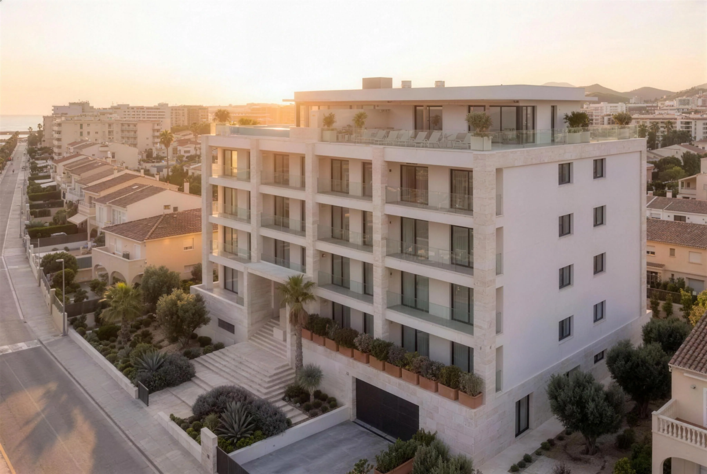
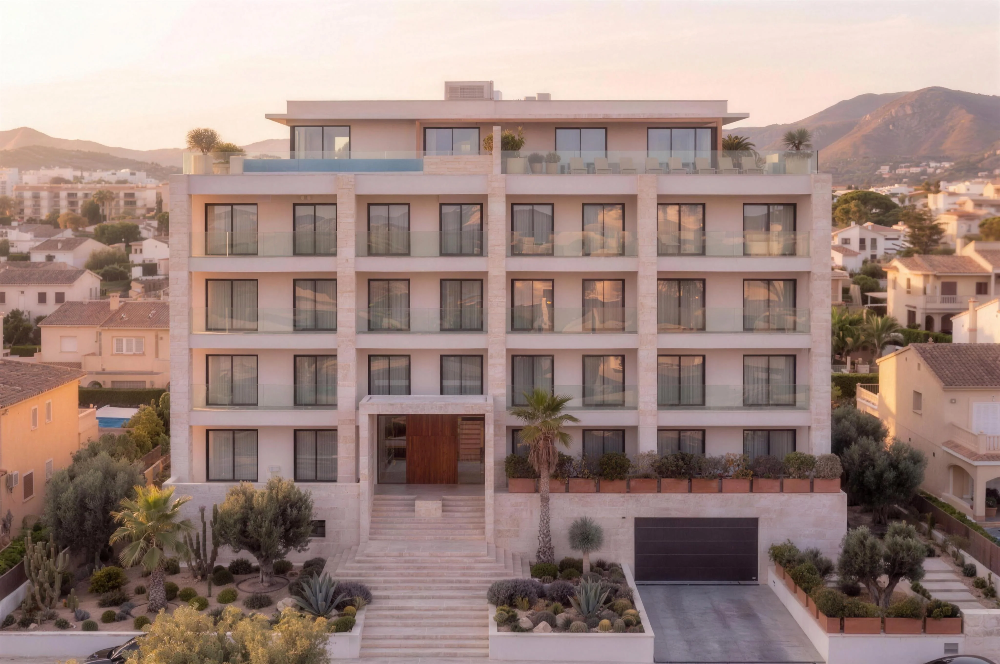

Cargando experiencia


Hasta 3 viviendas, lado a lado.
Respuesta rápida, sin compromiso.
¿Qué estás buscando?
Para una mejor experiencia,gira tu dispositivo
Si no gira solo, activa la rotación automática de la pantalla en los ajustes de tu móvil.